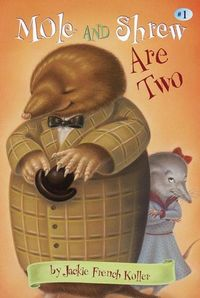

Mole And Shrew Are Two
A heartwarming story. Perfect early chapter book.
Download or read Mole And Shrew Are Two in PDF formats. You may also find other subjects related with Mole And Shrew Are Two.
- Filetype: PDF
- Pages: 64 pages
- ISBN: 9780375806902 / 375806903
BycqYa1Aodb.pdf
More About Mole And Shrew Are Two
A heartwarming story. Perfect early chapter book.